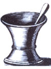

Herbal Remedies
As you walk down the aisles of your local drugstore seeing the array of brightly colored bottles and boxes whose contents are designed to treat an almost endless variety of ailments, could you ever imagine them as flowers once growing on a forest floor or as bark cut from one of its trees? Is there even a remote relationship between the life of the woods and the bottles on the shelf?
The nationally known author and environmental scientist G. Tyler Miller tells us that in America one of every four drugs sold either over-the-counter or by prescription has its origin in plant life. From the chemicals developed by nature have actually come 25 percent of all our medications. In some nations the percentage is as high as 50. There is a pharmacy in the forest.
The history of the relationship between products from living plants and healing medications goes back to the very beginnings of medicine itself. There are museum records of prescriptions dating back to Egypt in 3700 B.C. Their work was followed by the Chinese, and later, Greek and Roman medicine came into its own. By 600 A.D. the Arab world had developed a health care system while scientific medicine and pharmacy began to flourish in Europe in the eighth century.
The American experience is deeply rooted in the lore of Native Americans. Indian nations from coast to coast developed a considerable volume of knowledge of natu ral substances and used them with great success in treating their sick. The first official compendium (called a Pharmacopeia) was published in 1778, just two years following the American Revolution. By 1787, an American physician, Dr. Schoepf, had published his Materia Medica Americana, listing not only European remedies, but also dozens of drugs coming from our indigenous plants. Information regarding their preparation and uses had come largely from the accumulated knowledge of native American medicine men.
Unfortunately the relationship between these natural products and viable healing drugs was to suffer an image problem when those motivated by quick profit got into the act. The many Western movies with their portrayal of the traveling medicine show and its list of "cures for what ails you" wasn't a fabrication but an actual and dominant part of the medical scene. Lost in the vaudeville shuffle of questionable oils and tinctures was the fact that hundreds of pharmaceutical manufactures and dedicated physicians continued to produce and dispense medications which served to improve the health of our people. Many of these medications came from plant sources and were very effective.
What follows are nine of my favorite natural remedies with a history of usage that may go back hundreds, or even thousands, of years. Unfortunately, we've largely distanced ourselves from many of them as they found their way onto drugstore shelves as active ingredients of highly sophisticated (and very often artificially expensive) medicines. Yet the plants and the cures are ours to grow.
One quite versatile and commonly encountered wound healer is the yarrow plant, botanically know as Achillea millefollium. Belonging to the Composite family, it carries such common names as bloodwart, milfoil, sanguinary, stanchgrass, and thousand-leaf. Yarrow is native to Europe, but has been naturalized in most temperate regions of the United States, and can be found in fields, roadsides, and other open places. Its usage in medicine goes back to the ancient Greeks, who employed it in the treatment of cuts, wounds, burns, and bruises. Its genus name, Achillea, refers to the hero Achilles in Homer's Iliad, who is said to have used it on his soldiers's wounds. Yarrow was also used in the Middle Ages and appears in many English herbal notebooks of that day. The Navajo of the United States have also employed it for healing purposes.
You can prepare a poultice of yarrow by mixing ground-up yarrow tips in onequarter cup hot water with a few teaspoons each of glycerin, boric acid, and oil of wintergreen. This results in a soft semiliquid that, when applied to an infected area, tends to draw the infectious material from diseased tissues because of its absorptive properties.
In autumn across a large part of North America, cultivated pumpkins are seen in fields, heralding the start of fall. The pumpkin belongs to the gourd family and is a cousin of squashes and zucchinis.
When the first explorers arrived in America, they noticed the pumpkins in the cultivated corn fields of the Indians who had long since discovered their medicinal value. Although native to tropical America, the pumpkin has been cultivated almost everywhere in the world.
According to the American Pharmaceutical Association, pumpkin seeds are a proven anthelmintic, which is a substance that kills intestinal worms and expels them from the body. An excellent preparation that is not only excellent for tapeworms but also as a diuretic promoting regular passage of urine can be made by grinding up several ounces of pumpkin seeds and placing them in a small cup of corn syrup, which is flavored with oil of cinnamon.
Laxatives are prominent on grocery and drugstore shelves, but many of them treat the bowels harshly. The seeds of the psyllium plant are the natural way to handle this problem.
Psyllium, also known as fleaseed, fleawort, and plantain, is native to southern Europe, North Africa, and western Asia. and is also cultivated in North America. It is an annual herb growing up to 15 inches tall with narrow lance-shaped leaves growing in opposite pairs and whorls of three to six. Its habitat is usually poor soils and waste places in full sun.
Psyllium has long been used as an intestinal lubricant and laxative. The best way of making use of this herbal medicine is to soak an ounce of seeds in water for a couple of hours before taking. The gum of the seeds soaks up the water and provides both bulk and softness to the bowels, working as a nature-based alternative to the harshness of many commercial preparations.
Heartburn and gastritis (inflammation of the gastric mucosa), both of which are caused by excess stomach acid, are almost always chronically recurring disorders. Three to five cups of this tea daily will bring gradual but effective relief. It is best to space out the drinking of this tea over the whole day.
8 parts angelica root
4 parts chamomile flowers
4 parts balm leaves
4 parts peppermint leaves
2 parts caraway seed
2 parts fennel seed
1 part wormwood
Who of us hasn't experienced a sore throat that doesn't seem to want to go away? We try over-the-counter remedies that appear somewhat ineffective when we could be tapping into nature's drugstore for a time-tested source of relief. One of these sources is the privet, a plant transported to North America for cultivation as a hedge and readily available at most nurseries. Its abundant leaves form a thick screen and if the plant is allowed to grow it can, like psyllium, reach 15 feet in height.
The privet belongs to the olive family and grows well from the Canadian border south to Pennsylvania and North Carolina. It has lance-shaped-to-elliptical leaves which are smooth and dark green and grow in opposite pairs. Numerous small white flowers appear during the summer, appearing in terminal clusters, followed by the development of black berries.
The privet has a solid reputation as a medicinal plant, particularly as a gargle for sore throat. To prepare this herbal medicine, simply boil a cup of ground privet leaves in a pan of water, then filter through a cloth and when the extract has cooled down, use as a throat gargle.
Every time you reach for an aspirin you owe a debt to the plant called mead owsweet, for it was this herb from which salicylic acid was first obtained. Salicylates found in the flowers of the meadowsweet are the basis of its longstanding reputation as a remedy for flu, rheumatism, arthritis, and fevers.
The herb grows from Canada south to West Virginia and east to Ohio. It is a stout perennial growing up to six feet tall with a creeping underground stem (rhizome) with fleshy nodules. The leaves are pinnate with oval-toothed green leaflets and prominent veins below. It produces tiny, fragrant, cream-white-petaled flowers during summer.
Don't pay the drugstore for synthetic chemical remedies when you can prepare a very effective extraction of the flowers by boiling a cup of them in a small pan of water, straining off the extract, and drinking it for flu symptoms. Just another example of using nature's pharmacy in exchange for high-priced flu remedies sold in stores.
Sometimes when we suffer a cut it seems to happen at the most inopportune time. While various commercial preparations are available, the Cherokee Indians have long valued the goldenseal plant for its ability to stop bleeding and even hemorrhaging. Few wildflowers were as important to the American Indians in general as the versatile goldenseal, not only for its hemostatic properties, but also as a dye and paint material.
Goldenseal belongs to the buttercup family and is also known in different regions by other names such as eyeroot, ground raspberry, Indian dye, yellow puccoon, and yellow Indian paint. It is widespread in eastern United States, although many of the natural sites have been exterminated by commercial harvesting. It is a perennial herb with a hairy stem 6-18 inches high. The blossoming stem bears two alternate either five- or seven-lobed leaves. It displays a greenish-white solitary flower in the spring which has no petals and eventually develops into a mature red fruit that looks like a small raspberry.
The next time you suffer a cut, have some ground golden-seal ready to place on it. You can prepare it by pulverizing the rhizome (underground stem) of a plant or purchase it already in powder from a natural food store.
Valerian tea is rather neglected as a homemade remedy because the roots smell so strong during preparation. The flavor is also quite "singular," souse valerian in a mixture with other pleasant-tasting herbs, as in the following recipe:
8 parts valerian root
6 parts hops
3 parts peppermint leaves
3 parts hibiscus flowers
It is best to soak these herbs overnight in lukewarm water, heat up to drinking temperature in the morning, and then strain them off. The results are excellent. One of the most remarkable things about valerian is that it is calming, yet does not inhibit concentration and awareness. Can the same be said of any chemical tranquilizer?
Valerian seems to totally fascinate and hypnotize cats, so store it carefully if there are felines about the house.
We are always searching for relief from cold symptoms including the inflamed sinuses and clogged nasal passages that usually accompany a cold. Old-time drugstores used to carry a compound called "camphorated oil" which, when applied to inflamed or clogged areas, gave almost immediate relief. It has long disappeared from the shelves and several young pharmacists whom I talked to never heard of it.
Camphorated oil is a combination of two medicinal herbs, camphor and cottonseed oil. The camphor tree is native to eastern Asia and grows as tall as 100 feet. It is also cultivated in the warm subtropical regions of the United States. The aromatic leaves are harvested and the oil is extracted and distilled into colorless camphor crystals which are shipped all over the world. Some pharmacies still carry small amounts of camphor for compounding. Cottonseed oil, sometimes also called sweet oil, may be found in natural food stores and at times in hardware stores.
To make your own super-decongestant, place about half an ounce of camphor crystals in a Pyrex glass with a matching lid. Add a cup of cottonseed oil and gently warm until all camphor crystals have dissolved in the oil. Do not heat beyond this point. Then cover the container with a lid and allow the mixture to cool. You have compounded a very old prescription which is still very effective.
Warts on the skin can be extremely irritating and there are numerous commercial preparations which may work with varying degrees of success, though they'll cost you. One of the best preparations for wart removal is also a mixture of two natural sources: podophyllum and benzoin.
Podophyllum powder is obtained from the May apple, a perennial herb 6-18 inches high usually found in patches in wooded areas of the eastern United States. May apple is sometimes called mandrake, devil's apple, hog apple, umbrella plant, and wild lemon. It may be obtained front herbal outlets or natural food stores, if you are unable to locate any near you in nature c . Benzoin comes from a large tree grrowing in the Far East. It was brought to Europe in 1498 by the Portuguese navigator Vasco da Gama, who had obtained it from the peo ple in those regions. Tincture of benzoin, which is an alcoholic solution, is a yellow ish-brown fluid. Many drugstores carry it on their shelves in two-ounce bottles.
To make an excellent wart remover, mix a teaspoon of podophyllum which has been ground to powdered form in about a quarter of an ounce of tincture of benzoin n and mix thoroughly until the powder is dissolved. Apply to warts and watch them disappear within a couple of days.
There are hundreds more natural remedies dies out there for the growing and talking but it is very important to remember that they are not a substitute for the advise and care of your physician. Let them know what you are taking. Make health care meeting of your two minds, not a personal declaration of independence.
Dr. Dickson is a chemistry instructor m the nursing and pre-pharmacy program Catawba Valley Community College in Hickory, North Carolina.
BEATING THE BUM RAP
HERBAL REMEDIES STILL SUFFER FROM THE NEGATIVE IMAGE CREATED BY TRAVELING SNAKE-OIL SALESMEN.
__________________________________________________________________________________________________________________________
Colds and flu are heralded by such symptoms as runny nose, aching throat, hoarseness, coughing, back pain, aching muscles, and general fatigue. In children particularly, these conditions may be accompanied by earache or high fever. There are many herbs that can strengthen the body's immune system, several of which are included in the following .
...for adults
6 parts ephedra herb
3 parts elder flowers
3 parts rose hips
2 parts willow bark
2 parts linden flowers
2 parts chamomile flowers
2 parts hawthorn leaves with flowers
...for children
4 parts linden flowers
4 parts mullein
4 parts elder flowers
4 parts rose hips
4 parts thyme
This second tea has an antiinflammatory effect and promotes sweating, which is one of the classical means by which you can prevent a cold from taking hold. Children love the taste of this tea, especially when it is sweetened by a little honey.
When you have just come down with bronchitis, you should use anti-inflammatory herbs that discourage bacterial growth as well as coat and protect inflamed mucous membranes. A good cough tea mixture with this objective is the following.
8 parts plantain leaves
8 parts coltsfoot flowers
2 parts marshmallow root
2 parts mallow
The herbal teas listed in both parts of our herbal special feature section have been adapted from The Family Herbal (Healing Arts Press, 1994, an imprint of Inner Traditions International) by Barbara anti Peter Theiss.
0n the banks of streams, and now cultivated in yards, is the witch hazel bush. It is of particular interest because of the appearance of yellow flowers which do not appear until October and November and remain until temperatures become quite cold. Botanists call this bush hamemelis, and its leaves and bark, long used by Indian tribes, are distilled with diluted alcohol to produce the popular astringent sold in drugstores and also used in cosmetics called hamemelis water, or just simply witch hazel.
While not being a native North American plant, the aloe , with some 170 different species, has become widely cultivated here and thereby a part of both the garden and the woodlands scene. The dried juice of the leaves was known to the ancients as far back as the time of Alexander the Great. It continues to be used in pharmacy today in two ways: first, as an ingredient in drug mixtures designed to induce bowel movements and secondly, as a healing agent used in various ointments applied to burns and cuts.
A flowering plant native to Europe, but now found in American woods, and particularly grandma's flower garden, is the popular purple foxglove , known botanically as Digitalis purpurea. From the dried flowers of this plant have been isolated some powerful heart medications often marketed under the general name of Digoxin. The history of digitalis goes back to the tenth century when the British physicians were using it to treat cardiac irregularities. It remains a widely used drug to this day.
One of the most common trees we encounter in our walk through the forest is the elm, which grows over a wide range of territory. The specific tree of pharmaceutical value is the slippery elm , or Ulmus fulva. For centuries American Indians used the bark for preserving fatty substances from becoming rancid by melting, for example, bear's fat with the bark and then straining off the fat. The other use, however, is the one that has continued to this day. A warm infusion of the bark was discovered to relieve throat irritations. It is now used either alone or as an ingredient of throat lozenges which can be purchased over the counter in drug and grocery stores.
Our next stop in our journey through the wild forest brings us to the jimson or Jamestown weed, which grows wild throughout the United States. The thornapple species of the annual plant is called the Datura strammonium, and from its dried leaves and flowering tops is obtained the drug strammonium. It was first brought to England from the East Indies where natives there were smoking it for the relief of asthma symptoms. The fluid extract of strammonium continues to be used in medicine as a bronchial dilator for the relief of breathing problems associated with asthma.
The final stop on this journey through the forest brings us to the willow tree. This tree is one of the original sources for what has become the most widely used drug in the world-the aspirin tablet. For centuries medicine men of native tribes recommended chewing the bark of the Spirea ulmaria as an antidote for pain and fevers. But it wasn't until the 19th century that a German chemist discovered that its main ingredient, salicylic acid, was indeed both an antipyretic (fever reducer) and an analgesic (pain reliever). As a result of all this the compound acetylsalicylic acid, or ASA to your nurse, or just plain aspirin, has found its way to the shelves or virtually every home medicine chest in America.
|
 |
|
|
|
|
|
|
|
|
|
|
|
|
|
|